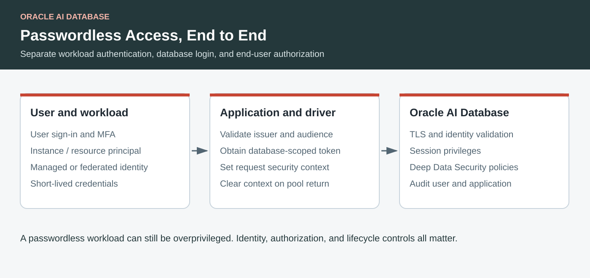

Oracle AI Database · Passwordless · OAuth · Deep Data Security
Passwordless Access to Oracle AI Database: Workloads, Users, and End-to-End Security
Understand instance and resource principals, OAuth, on-premises authentication, Deep Data Security, and the differences across OCI, Azure, AWS, Google Cloud, and Snowflake.
By Paul Parkinson · September 2026 · Technical references checked September 21, 2026

Key Takeaways
- Define passwordless separately for database login, application credentials, and human sign-in.
- OCI principals and Azure managed identities can remove application-managed login secrets on supported database and driver paths.
- Deep Data Security supports both delegated on-behalf-of and application-identity flows; it is not inherently tied to a database password.
- Verify every trust boundary, including pool reuse, data authorization, model access, and SQL parameter binding.
Oracle AI Database supports passwordless database access through supported token-based and external authentication mechanisms. Achieving an end-to-end design means identifying every credential in the path: how a workload obtains its identity, how the database accepts that identity, and how a signed-in user's permissions survive an application connection pool.
Deep Data Security does not make the answer “password-based” merely because two tokens are involved. It supplies fine-grained data authorization. Whether the complete deployment still holds a database password, OAuth client secret, or private key depends on the connection and token-acquisition mechanisms used around it.
Be Precise About What “Passwordless” Means
| Claim | What it means | What may remain |
|---|---|---|
| No password in source code | The application retrieves a credential from a protected store. | A database password still exists and needs rotation. |
| No database password | A token, certificate, Kerberos ticket, or other supported external identity authenticates the database session. | A client secret or private key may still obtain that identity. |
| No application-managed long-lived login secret | A workload identity or supported federation mechanism obtains short-lived credentials. | Platform trust, token handling, and workload compromise risks remain. |
| Passwordless human sign-in | The identity provider authenticates a person with a suitable method such as a passkey. | This says nothing about the application's database connection. |
A service account is a nonhuman identity, not a guarantee of any particular authentication strength. A Google service account backed by a downloaded key, an Entra application backed by a client secret, and a workload using platform-issued credentials have different operational properties.
Map the Security Mechanisms to Their Job
There is no single setting that secures all database access. The following map covers the main mechanisms and their responsibilities; exact availability depends on the database service, release, driver, and licensed options.
| Layer | Mechanisms | Boundary |
|---|---|---|
| Network and transport | Private endpoints, routing and firewall rules, TLS with server verification, and mTLS where required. | Reachability and encrypted transport do not grant SQL privileges. |
| Database session authentication | Database passwords; IAM / OAuth tokens; Kerberos; supported certificate, operating-system, and directory authentication. | The database must validate the selected identity and map it to authorized access. |
| Application identity propagation | Proxy authentication, trusted application contexts, and Deep Data Security end-user contexts. | Pool identity and end-user identity may differ. An arbitrary client identifier is not proof of user authentication. |
| Data authorization | Object and system grants, roles, views, Virtual Private Database, Real Application Security, Deep Data Security, and other policy features where available. | Choose and test an applicable authorization model. These products are not interchangeable switches. |
| Protection and accountability | Auditing, Database Vault, SQL Firewall, encryption at rest, key management, and security assessment where available. | These complement login controls; they do not remove the need for authentication and least privilege. |
A downloaded Autonomous Database mTLS wallet commonly supplies transport credentials while a database password or token still supplies the database identity. Separately, SEPS stores passwords in a wallet. Certificate-based external authentication is another configured mechanism; “we use a wallet” is not enough to determine which one is in use. See the Oracle authentication guide.
OCI Instance and Resource Principals
An OCI instance principal represents a compute instance. A resource principal represents a supported OCI resource, such as a function or an Autonomous Database acting as a client of another OCI service. They are workload identities with policy-governed access, not user accounts whose password is placed on a VM. Oracle's resource principal architecture article explains the short-lived credential machinery.
For database login, the driver/provider must obtain a database-appropriate token, the target database must support and enable the authentication integration, and IAM permissions and database mappings must authorize the principal. Permission to read a vault or manage a database resource is insufficient. Consult the OCI IAM database authentication guide for the supported target and policy setup.
// Illustrative JDBC connection after IAM, DB mapping, and TLS setup.
// Install compatible Oracle JDBC and ojdbc-provider-oci dependencies.
OracleDataSource ds = new OracleDataSource();
ds.setURL(System.getenv("ORACLE_TCPS_URL"));
Properties props = new Properties();
props.setProperty(OracleConnection.CONNECTION_PROPERTY_TOKEN_AUTHENTICATION,
"OCI_INSTANCE_PRINCIPAL");
ds.setConnectionProperties(props);
try (Connection connection = ds.getConnection()) {
// Execute narrowly authorized application operations.
}The JDBC reference also lists OCI_RESOURCE_PRINCIPAL, OCI_DELEGATION_TOKEN, interactive and API-key modes, and file-based OCI_TOKEN. An API-key mode may eliminate a database password while retaining a long-lived signing key. Resource-principal mode requires an environment that actually exposes that principal; setting the property on an arbitrary on-premises server does not create one. See the token authentication property reference.
Azure, AWS, and Google Cloud: Separate Hosting from Token Trust
| Application environment | Workload identity | Implication for Oracle database access |
|---|---|---|
| Azure | Managed identity or a service principal; supported federation can replace a shared client secret. | Oracle documents Microsoft Entra token authentication on supported deployments. Register the database audience and map identities. JDBC exposes AZURE_MANAGED_IDENTITY and other Entra modes. |
| AWS | EC2 instance profiles, ECS task roles, EKS workload identities, or other AWS role mechanisms. | These can authorize Bedrock, S3, and Secrets Manager. They do not by themselves create an Oracle SQL identity, even for Oracle Database@AWS. |
| Google Cloud | Attached service accounts, workload identity federation, and supported impersonation. | These authorize Google APIs. Configure the documented Oracle authentication or application integration separately; a Google token for an unrelated audience cannot simply be passed to JDBC. |
| OCI | Instance and resource principals, with appropriate policies. | Use the supported Oracle database token path and mappings. Also distinguish database login from the database's outbound resource-principal calls. |
The Azure database integration is documented in Oracle's Entra authentication guide. Workload federation itself is documented by Microsoft and Google. A working federation path to one API does not establish compatibility with every database driver.
Oracle's external authentication for Database Tools documents additional identity providers, including Google, AWS Cognito, and Okta. That is a specific tool integration surface. Do not generalize it into arbitrary JWT acceptance by Oracle Net. Likewise, the Gemini Enterprise workshop is a separate managed-agent / application flow whose Oracle authorization setup still matters.
What Works On Premises?
On-premises applications can use supported external authentication and federated identity without pretending to be cloud instances. Kerberos and directory integration can fit an existing enterprise identity estate. Certificate-based authentication can fit a PKI deployment. A supported database OAuth integration can work across a network boundary when issuer discovery, trust, token acquisition, and database mapping are configured.
Centrally Managed Users (CMU) integrates Microsoft Active Directory with database identities and roles, with password, Kerberos, or PKI authentication options. Centralization alone is therefore not a passwordless guarantee. Oracle also supports RADIUS integration for applicable authentication deployments. Legacy Enterprise User Security appears in older designs, but Oracle documents it as deprecated in 26ai and recommends migration to CMU or an appropriate cloud identity integration. Check the current authentication guide before selecting a new deployment pattern.
Use local operating-system authentication only within its documented trusted-host boundaries; it is not a general remote-login shortcut. A scheduled process may still need a protected Kerberos keytab or private key. For an external workload using federation, verify the identity provider, token audience, and driver acquisition path together. Protect and rotate bootstrap credentials where they remain.
Schema-only accounts are useful for separating object ownership from login users, but an account that cannot authenticate is not a workload authentication solution. Proxy authentication is useful for delegating access through a trusted middle tier, but its initial pool connection still needs its own authentication mechanism.
Deep Data Security: Two Tokens Do Not Imply a Password
Deep Data Security brings end-user and application context into database authorization, including row, column, and cell policies. The database-access token establishes the authorized database-facing identity; the end-user token conveys the user's signed identity and claims for the configured context. Token count is not a measure of whether secrets remain. See the technical brief.
The claim that Deep Data Security cannot use token exchange is incorrect as a general statement. Oracle's current guide explicitly describes delegated on-behalf-of access as well as application-identity access. It also distinguishes the physical connection from the security context attached to it. Choose the flow that matches whose authority should apply. Oracle Deep Data Security Guide, “Data Access Patterns”.
| Flow | Token acquisition | Security meaning |
|---|---|---|
| Delegated on-behalf-of (OBO) | The application presents an end-user access token plus its own client authentication to obtain a database-scoped delegated token. | The downstream token represents the user. Configure delegated permissions, consent, and the correct audience. |
| Client credentials | The application authenticates as itself to obtain an application token for the database resource. | No user delegation is created by that grant. The separately propagated user context supplies user information in the configured DDS pattern. |
There is a narrower, valid restriction behind the concern: Microsoft Entra's standard OBO flow accepts user identity, not an app-only client-credentials token as a substitute user assertion. You cannot turn an application token into a delegated user merely by exchanging it. That restriction does not prohibit exchanging the original user's correctly scoped access token. See Microsoft's OBO documentation.
Also, client_credentials names a grant type, not a requirement to use a shared password. Entra supports client authentication using a secret, a certificate, or supported federated credentials. Certificates remove a shared secret but leave a private key to protect; workload federation can avoid an application-managed long-lived key. Whether a particular Spring registration or JDBC provider supports the chosen acquisition method must be checked. See the client-credentials protocol.
What the Existing Repository Examples Actually Do
Inspection of the companion code reveals three independent choices:
- The explicit API token service sends the user token as
assertion, usesrequested_token_use=on_behalf_of, and authenticates the client with aclient_secret. - The Spring provider configuration defaults its OAuth registration to
client_credentialsandclient_secret_post. - The provider configuration also supplies
DEEPSEC_USERNAMEandDEEPSEC_PASSWORDto the UCP pool. Propagating user tokens does not remove those pool credentials.
Therefore the checked-in demo configuration is not an end-to-end secretless implementation. It demonstrates data authorization and identity propagation with existing credentials. The explicit API variant demonstrates an OBO exchange; the provider variant's default is application client credentials. Describing both as the same token flow would be misleading. This conclusion comes from source inspection, not a new deployment test.
A migration should separately replace the physical pool's password where supported, select a supported client-authentication mechanism without a shared secret, and preserve the appropriate DDS context semantics. Oracle documents application-identity direct logon as an alternative to a connection-pool user for applicable DDS flows; validate the exact database patch, identity configuration, and driver combination rather than treating it as a configuration-only change.
Pooling Is a Security Lifecycle
Authenticate and validate the inbound request before borrowing a connection. Attach the intended end-user context before SQL executes. Clear that context on every completion path before reusing the connection. If cleanup fails, discard the affected physical connection through the pool's supported mechanism; do not let the next request inherit its state.
Use the explicit JDBC example to see EndUserSecurityContext.createWithToken, setEndUserSecurityContext, and clearEndUserSecurityContext. With a provider-managed lifecycle, verify its documented cleanup and error behavior instead of duplicating the context mechanism.
Test expired tokens during new physical connections, signing-key rotation, revoked access, and concurrent users sharing a pool. A short token lifetime does not establish that an already open database session is immediately revoked. Define maximum session lifetime and incident-response behavior for the actual database service.
Use Standard JDBC Binding Against SQL Injection
Use PreparedStatement with bound values. Do not concatenate user text into SQL, including text returned by a model. This standard JDBC API works independently of your identity provider:
String sql = "SELECT product_id, quantity FROM app_inventory "
+ "WHERE warehouse_id = ? AND product_id = ?";
try (PreparedStatement statement = connection.prepareStatement(sql)) {
statement.setLong(1, warehouseId);
statement.setLong(2, productId);
try (ResultSet rows = statement.executeQuery()) {
while (rows.next()) {
// Return only the authorized fields required by this operation.
}
}
}Bind parameters represent values, not table names or sort keywords. Map those choices to fixed server-side allowlists. Stored procedures remain vulnerable if they concatenate untrusted dynamic SQL internally. Use least-privilege accounts, timeouts, bounded results, and database policies alongside binding. A SQL-generation model or setReadOnly(true) hint is not a substitute for database-enforced read-only privileges.
Compare Passwordless Options Fairly
Passwordless access is available across several database platforms. Compare the supported identity flow and residual credentials, rather than reducing the question to whether a driver has a parameter named “password.”
| Platform | Passwordless options | Important distinction |
|---|---|---|
| Oracle AI Database | Supported OCI IAM / Entra tokens, external authentication such as Kerberos or certificates, and applicable workload-principal paths. | Service, client, and database configuration determine support. DDS can add per-user data authorization through pooled applications. |
| Snowflake | Workload identity federation for AWS, Azure, Google Cloud, and supported OIDC identities; also OAuth, SSO, and key-pair options. | WIF avoids application-managed long-lived login credentials. Key-pair login avoids a password but still requires protection of a private key. |
| Amazon RDS / Aurora supported engines | IAM database authentication on supported MariaDB, MySQL, and PostgreSQL offerings. | RDS for Oracle is not covered by that IAM database-login mechanism; AWS documents Kerberos for Oracle. RDS for Oracle and Oracle Database@AWS are different services. |
| Azure SQL | Microsoft Entra authentication, including managed identities. | Map the identity to database access and grant SQL permissions. Azure resource permissions alone are insufficient. |
| Cloud SQL for PostgreSQL | IAM database authentication for users and service accounts, with connector-assisted token handling. | Cloud SQL access and database authorization remain distinct; an Auth Proxy alone does not select IAM database login. |
References: Snowflake WIF, RDS authentication, Azure SQL Entra authentication, and Cloud SQL IAM authentication. These identity features are not claims of equivalent authorization semantics, workload support, or database functionality.
A Practical Path to Fewer Secrets
- Inventory the entire chain. Include database passwords, OAuth client secrets, API signing keys, wallets, keytabs, CI credentials, and model-provider keys.
- Select a supported identity path. Confirm runtime, driver, database release, identity issuer, audience, and user or workload mapping together.
- Use separate identities for separate jobs. Distinguish provisioning, document ingestion, read-only retrieval, and approved business writes.
- Prove authorization. Test a permitted action and a denied action for each identity. Confirm tenant isolation and pooled-session cleanup.
- Prove rotation and recovery. Exercise renewal, revoked grants, provider outages, key rotation, and emergency access with an audit trail.
For an Oracle-and-Bedrock agent, that inventory includes an AWS role for model inference and a distinct Oracle login path. For the Gemini workflow it includes Google-side access and the managed Oracle integration. Removing one password is valuable; documenting and testing each remaining trust relationship makes the result dependable.
Relevant Links and Further Reading
- Gemini Enterprise and Oracle AI Database workshop
- Oracle JDBC: CONNECTION_PROPERTY_TOKEN_AUTHENTICATION
- Oracle: behind the scenes of OCI resource principals
- Oracle database authentication mechanisms
- Oracle database authentication with OCI IAM
- Oracle database authentication with Microsoft Entra ID
- External authentication for Oracle Database Tools
- Oracle Deep Data Security Guide
- Oracle Deep Data Security technical brief
- Microsoft Entra on-behalf-of flow
- Microsoft Entra client credentials: secrets, certificates, and federation
- Snowflake workload identity federation
- AWS database authentication by RDS engine
- Azure SQL and Microsoft Entra authentication
- Cloud SQL for PostgreSQL IAM authentication
- Java: using prepared statements
- Companion: configuration providers
- Existing Deep Data Security application walkthrough
Frequently Asked Questions
Is an OAuth client secret a database password?
No, but it is still a long-lived shared credential. Database-password-free and application-secret-free are different claims.
Can Deep Data Security use an on-behalf-of token exchange?
Yes. Oracle documents that flow. Entra’s standard OBO flow requires a suitable user token; an app-only token cannot stand in for a user.
Can I enable an OCI instance principal on any server?
No. An instance principal depends on the OCI compute environment. On-premises workloads need another supported identity and token-acquisition path.
Does passwordless login prevent SQL injection or excessive data access?
No. Continue using bound SQL parameters, least privilege, database data policies, controlled tool execution, and auditing.